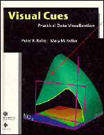

| data |
| home page |
| You may want to print this page as you will need these directions after downloading the files. If the disks are not blank, then the install cannot be created properly. On the computer that is used for the download, be sure to note what directory you are downloading to. Follow this procedure for all disks using each file name (disk2. After following the above instructions, you will have a full set of install floppy disks. |
|  |
|